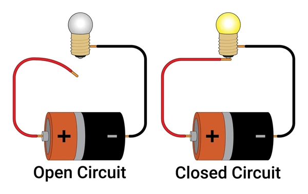
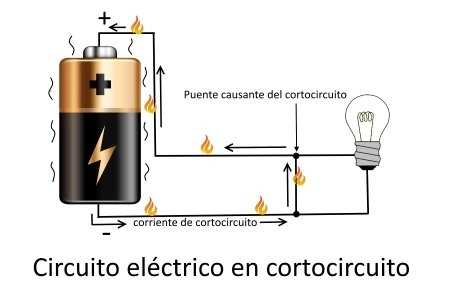
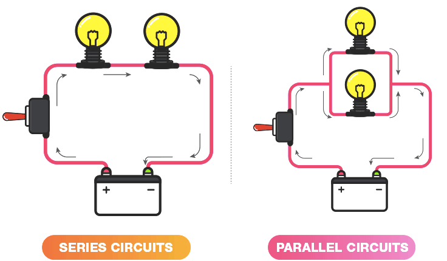

Circuito electrico
¿Qué es un circuito electrico?
Un circuito eléctrico es el conjunto de elementos eléctricos conectados entre sí que permiten generar, transportar y utilizar la energía eléctrica con la finalidad de transformarla en otro tipo de energía como, por ejemplo, energía calorífica (estufa), energía lumínica (bombilla) o energía mecánica (motor).

¿Cuáles son los tipos de circuitos electricos?
Hay cinco tipos principales de circuitos básicos: circuito cerrado, circuito abierto, cortocircuito, circuito en serie y circuito en paralelo.
Circuito cerrado:
Un circuito es una colección de componentes reales, fuentes de poder y fuentes de señales, todas conectadas de modo que la corriente pueda fluir en un círculo completo. Circuito cerrado – Un circuito es cerrado si el círculo está completo, si todas las corrientes tienen una trayectoria de regreso a donde iniciaron.
Circuito abierto:
Un circuito abierto es un circuito eléctrico en el cual no circula la corriente eléctrica por estar este interrumpido o no comunicado por medio de un conductor eléctrico.

Cortocircuito:
Un cortocircuito es básicamente un problema en una línea eléctrica originado habitualmente cuando dos polos opuestos entran en contacto, esto provoca una descarga que la propia línea no puede soportar, provocando un fallo en el sistema eléctrico.

Circuito en serie:
Un circuito en serie es una configuración de conexión en la que los terminales de los dispositivos se conectan sucesivamente, es decir, el terminal de salida de un dispositivo se conecta a la terminal de entrada del dispositivo siguiente.
Circuito en paralelo:
Un circuito paralelo es una conexión de dispositivos en la que los bornes o terminales de entrada de todos los dispositivos conectados coinciden entre sí, al igual que sus terminales de salida.
